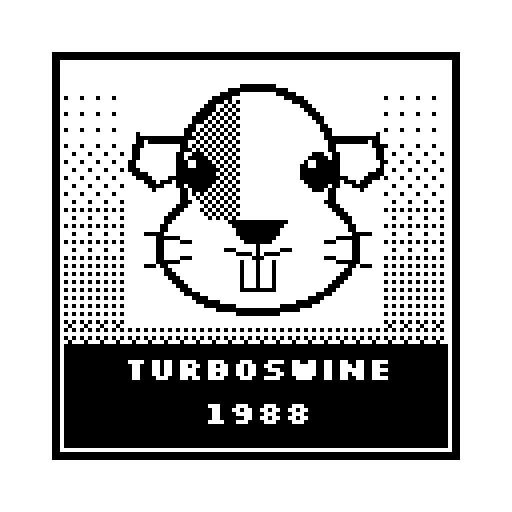
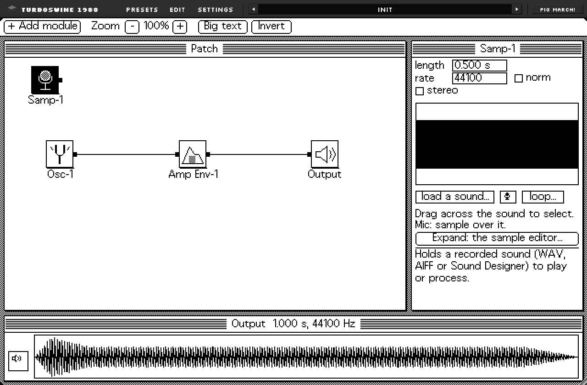
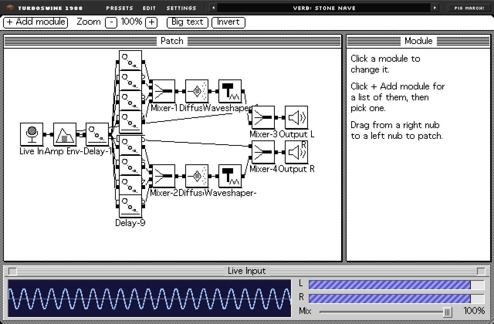

Drums
A plain drum track, then the same drums run through a wavefolder and mixed back in at 39%.
0:00 / 1:13

I made this to get the guitar tone of Nine Inch Nails. It's a modular sound designer with a filthy little wavefolder in it. Patch modules together, bend the sound through a curve you draw, and play it from the keys, or run a guitar straight through it.
Download it free Hear Porcellus
Mac and Windows. AU, VST3, LV2 and a standalone app.
Past the top of the curve, the wave turns round and comes back down. Every fold is new harmonics.
The TurboSwine demonstration track. Every note is a TurboSwine preset, run through TurboSwine FX. I mixed and mastered it from the stems. Jump to a part to hear what each patch does.
About 6 MB loads when you press play.
Inspired by "March of the Pigs", which is where the guinea pigs came from. This is my go at that guitar tone, and it's here to show how awesome the wavefolding is. It's the same mix twice: flip the switch while it plays and hear the wavefolder come out of everything at once.
About 2 MB loads when you press play.
Every part of the song on its own, so you can hear what the patches do.
A plain drum track, then the same drums run through a wavefolder and mixed back in at 39%.
Three wavefolded guitars stacked into one sound, each with its own patch. Hear them one at a time: the left, the right and the middle.
Played from the keys, from TurboSwine's first patch: one oscillator into the output.
Four seconds of guitar through a Waveshaper, a Modulator and a Pitch Shifter.
The squeals came out of TurboSwine too, with the gaps between them taken out here. The "Guinea Pig Laugh" preset comes with the full version.
It does what the 1988 program TurboSynth did, and opens its patch files. The sound is worked out first, then played like a sampler, with all the grit that brings.

It's in the plug-in too. Press it.
There's one installer for both. Start free, and pay the $5 only if you want the new stuff.
$0
Everything the original did, and 18 presets made only of its modules, for keeps.
Download the free version
$5
All of that, plus everything new. One payment, no subscription.
No second download: buy a key, then paste it into the free version from the Settings menu, under Unlock the full version.
Buy it for $5A springboard, and a collection of extremely unique-sounding presets unlike any other reverb plug-in you've heard.
Put it on a guitar, a voice or a whole mix and start from Stone Nave, Shimmer Attic, Ring Hall, Six Bit Cathedral or Dark Cellar, then bend the patch into your own. It's great for electronic music, indie and alternative, and a definitive need for a producer's toolbag.

| Feature | Free | Full |
|---|---|---|
| The 16 original modules and the wavefolder | Yes | Yes |
| Opens original patch files | Yes | Yes |
| Harmonic editor, loops, stereo patches | Yes | Yes |
| AU, VST3, LV2 and the app | Yes | Yes |
| 18 Originals presets, made only of the original modules | Yes | Yes |
| Save and load your own presets | Yes | Yes |
| TurboSwine FX: your guitar or voice through a patch, live | No | Yes |
| Ladder Filter: warm and squelchy, with sweep and drive | No | Yes |
| Ring Shifter, with an LFO and up to 32 steps that can follow your DAW | No | Yes |
| Pepper Pot: a harsh robot-tyrant voice, with Anger, Gruff, Era and Pitch | No | Yes |
| Stereo and pan on nearly every module | No | Yes |
| The big Sample editor | No | Yes |
| Over 200 more presets: hazy tape, jungle, early digital, organs, IDM, drums, reverbs, pads, leads, bass, keys, bells | No | Yes |
Mac: macOS 10.11 or newer on Intel, macOS 11 or newer on Apple Silicon. It isn't signed by Apple, so the first time go to System Settings, then Privacy & Security, and click Open Anyway.
Windows: Windows 10 or 11, 64-bit. If a blue box appears, click More info, then Run anyway.